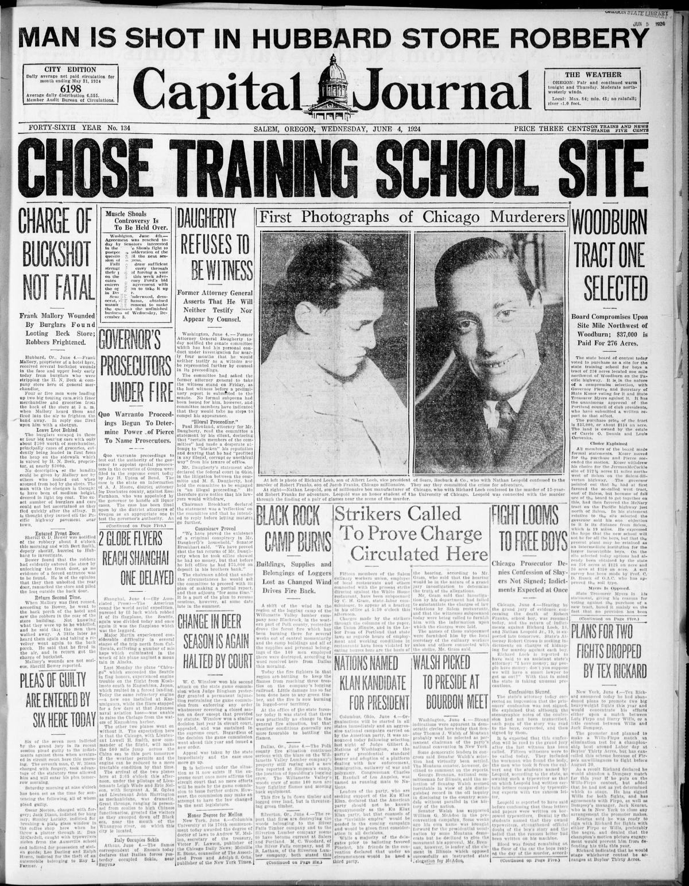
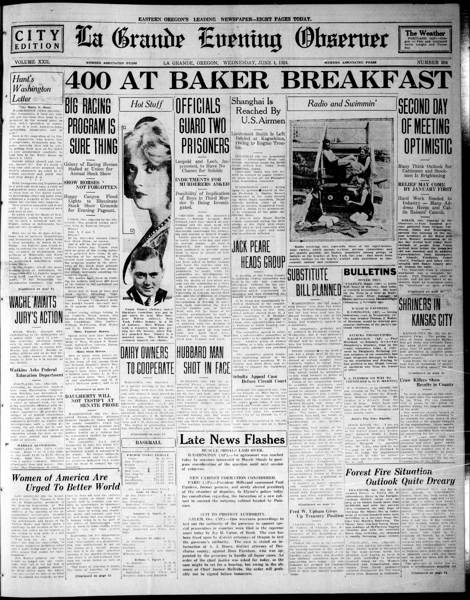

HN HN-438 · June 4, 1924 · Crime, Law & Justice > Murders & Assassinations > Individual homicides
Source: Indianapolis Times, p. 6 — original page.
Report: The paper described Nathan Leopold Jr. and Richard Loeb as confessed killers of 14-year-old Robert 'Bobby' Franks, while an illustrated feature blamed or psychoanalyzed the pair as 'products of the Jazz Age.'
Assessment: The Franks murder and the defendants' admissions were real, but broad sociological theories about modern youth are journalistic interpretation, not findings of clinical causation. The later court disposition is recorded in HN-439; claims of additional planned crimes would require independent corroboration.
Identity-review candidate peers: HN-439:Algorithmic
Authentic scans retrieved from Historic Oregon Newspapers (University of Oregon). Article crops are located using the archive's own ALTO OCR word coordinates and rendered at native crop resolution; page scans are 1,200-pixel-wide renditions. No images were generated, mocked, or retouched.


Not yet acquired. Queued for provider-specific acquisition testing (see source-acquisition manifest).
URL (preserved verbatim): https://newspapers.library.in.gov/?a=d&d=IPT19240604.1.6
Saved research report: Historical_Newspaper_Event_Research_428-452_2026-10-23.md
Evidence note: A newspaper report means a historical publication made a claim; it does not establish that claim as fact. Contemporary reporting is separated from later scholarly context and our own assessment.